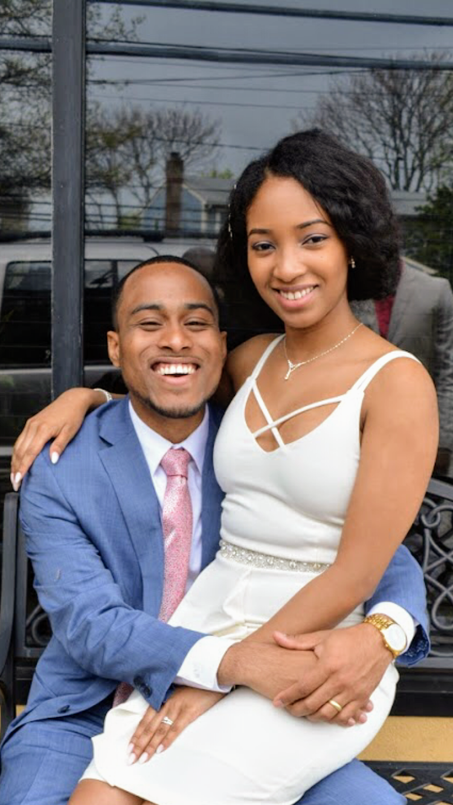

About Me

My name is Whithedel, or you can call me Ricky, I come from a wealthy family and, grew up in Haiti where my father was a gynaecologist and by 2001 was the spokesman of the president, and my mother had a small business. Life was great as a kid; I was innocent and oblivious to what life would be as a grown up. Between 2002 and 2004 my life is going to change drastically. My parents were getting divorced, and a political crisis started. By 2004 the president of Haiti got exiled to Africa, and my family was in danger due to the crisis. So for that reason, my father took a political asylum. Which is how I got in the state.
Once we got to the U.S it was a struggle, my father couldn't practice in the state, and my mother’s business crashed utterly.Now here I'm a confused child in a country where I had to learn the language and adjust accordingly to my new life. High school was tough due to the language barrier and the fact that I was relocating to different family houses every six months to a year. I ended up taking my GED instead of finishing high school. Then right after I attended Miami Dade College and Broward College pursuing a degree in computer information system and computer science but that did not go too far college expenses were too expensive for me, and I ended dropping this dream of mine thinking that I would be the poll to keep my family upright again.But I didn't want to give up on that dream. So in the pursuit of a better life, while working for Papa John's, I joined a pyramid scheme called Scentura. I was given boxes of perfume to drive around with, going from parking lot to parking lot, soliciting and trying to sell the fragrances. I was excellent at it but the catch was selling without taking a profit for a year and if I were to fit their criteria of being a great leader with outstanding performance I would be getting my store. Well after about eight months I realise it was a scheme. A few months after that I decided to move to new york again in the pursuit of a better life.Once I got new york I got a job as a Vehicle parts delivery driving around from shop to shop and delivering parts as I was doing my deliveries knowing that I had a bit of knowledge in mechanic I was also looking for a position as a mechanic. Finally, I got a Job to change brakes and tires and some small jobs in vehicles at TNJ auto repair working from Monday to Saturday from 7 AM to 6 PM. Well, you can imagine that it was extremely tiring. A life without a soul, doing something that I didn’t love. So I quit and took a job at Advantage Hyundai as a valet. And while I was there, I found the opportunity of becoming a sales consultant for them which is where I currently work.Once I became a sales consultant life got a bit easier. I got married to my beautiful wife (Marie Betty Carre) in April of 2017 then found an apartment in Wheatley Heights New York in November of 2018. Also currently a proud father of my baby (Zhahalee).
But let's not forget I still have a dream, a dream in which I can help get my family a better life and do something that I love and enjoy doing. So I tried a different approach, I have invested money and lost it all. I spent trying to open an Amazon doing personal branding, but I failed. I invested trying to do drop shipping in a Shopify store again I failed. I invested in the crypto market, and I failed. At this point, I told myself maybe this isn't the right thing for me.Perhaps I should go back to school, and bring back my dream, live a happy life, and change the direction that my life is going. I took a loan from teachers federal credit union for a coding Bootcamp program at Columbia University which started on April 9 2019. My dream was fading, but I could not and, would not accept it.